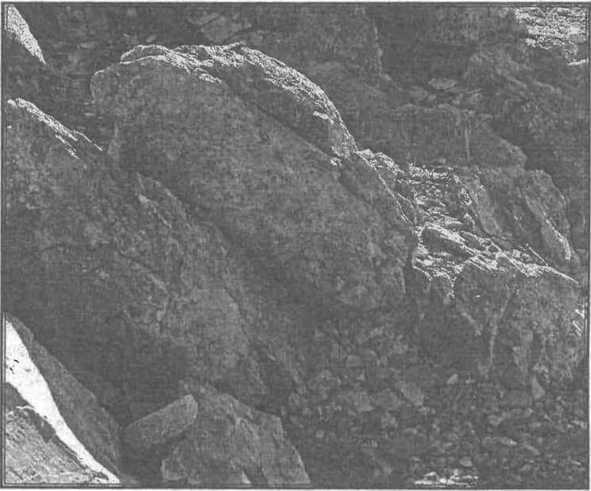
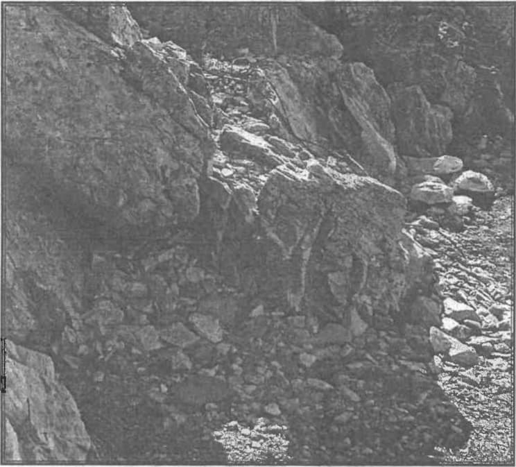

Înainte de 1989,în România oamenii/locuitorii se împărțeau în:
1. „Conducătorul” — UNIC! — dar deloc lipsit de hărnicie și de spirit gospodăresc, și nici de oarece demnitate! (ba chiar și de istețime și de un patriotism destul de „personal”, dar foarte benefic pentru politica externă a României)
2. politicienii (unii destul de abili, dar fără coloană vertebrală!) și politrucii de la conducere (conducerea țării: Comitetul Central, Marea Adunare Națională etc. — dar și conducerile județelor și localităților/comunităților „până la Dumnezeu, te mănâncă sfinții”, nu?);
3. „clasa muncitoare” - proletariatul dictatorial” (?!) prevăzut de Capitalul lui Marx; da, bine, nu conducea, nu „dicta” nimic! - dar, chiar dacă nu „conducea/dicta”, măcar avea unde și ce munci!;
4. „țărănimea muncitoare” (castrată prin colhozuri și sovhozuri, în proporție de peste 80%!) — clasă cam „nesigură” (pentru că mai păstra instinctul pământului) — și, în fine
5. „pătura intelectualității” — cât pe ce să fie, și ea, recunoscută drept, din „pătură” - „clasă socială” sadea! - dar, între timp, s-a produs „accidentul” bizar de la Târgoviște.
Până și preoții și monahii aveau un statut destul de bine delimitat, întru „liber-profesionismul” lor! Și noi, românii, nu le-am dus lipsa, iar el, clerul, precum și sfințiții monahi — își făceau datoria, cu destulă tragere de inimă!
Această împărțire, oricât de „lemnoasă” și de artificială, avea un mare „beneficiu: ORDINEA! Și, consecința firească: eficiența (în ambele sensuri bun și răul)! - aveai cui te plânge și uneori, pentru a sublinia paradoxul „miraculosului ateismului” — se și rezolvau plângerile ba chiar (uneori, în perioada „ceaușistă”) în spiritul Justiției Autentice!
Organismul Comunist FUNCȚIONA! (bine, prost, dar FUNCȚIONA!) — până la „defecțiunea” lui Pacepa și a unei părți a Serviciilor Secrete. Haosul era exclus (precum în orice regim autoritar), oamenii aveau stabilitatea existenței. Mai lipseau „libertatea de exprimare”, „spiritul religios-creștin” (după care am însetat mulți, atunci!) și destui „fuștei” ai „autenticului Scării Axiologice” Offf, da, mulți!
Privim azi, „actualitatea românească” - 2010, în ce privește structurarea și funcționarea socială — și lucrurile apar mult mai tulburi (este și firesc, după câtămai „Revoluția”!):
1. „Derbedeul-Șef” — UNIC („Il Capo di Tutti Capi!”) în ce privește „libertatea” comportamentului: minte/înșală „UNICAT”, caftește (scuipă și înjură ca un birjar!) cetățeni, după bunul lui plac UNICAT MONDIAL! și trădează interesul național „GRUPA MARE”!
Fiind un derbedeu, nu știe nimic despre muncă - fiind un derbedeu, „îl doare în bască” de popor (A BLOCAT TOT CE SE PUTEA BLOCA, ÎNTR-O SOCIETATE CÂT DE CÂT NORMALĂ! — I-A ÎNCĂIERAT PE TOȚI ÎMPOTRIVA TUTUROR NICI NU ERA GREU ȘI DE NE-AȘTEPTAT, DE LA UN BĂTĂUȘ DE PROFESIE! — dar beneficiind și de o opoziție de „cacao”!) numai să se ivească cineva și să stea „la cafteală”, când îl apucă pe el „criza”-amocul — fiind un ȘEF-Derbedeu, se amestecă în tot felul de șușanele internaționale PERDANTE ȘI LETALE, PENTRU DESTINUL UNUI NEAM - șușanele cate au prăbușit TOTAL România, au transformat România în Țara lui „Donnez moi, s'il vous plaît!” nimeni (dintre politicienii dinafară, adică, dintr-ăia-care au sprijinit, mai pe față, mai pe dos, suirea pe tron a acestui UBU-ROI?) nu-l respectă și, prin el, nimeni nu mai respectă poporul român.
În definitiv, ce ar mai avea de respectat, când Derbedeul-Șef și acoliții săi, nu mai puțin derbedei, dat nu „UNICI”, au distrus și furat și mistificat totul?!
NU ARE NICIUN DUMNEZEU! — nici EL - Derbedeul-Șef, dar nici „garnitura” lui!
A PUS ȘI PUNE, CONTINUU ȘI EXTREM DE GRAV, ÎN PERICOL, SECURITATEA NAȚIONALĂ A ROMÂNIEI!
ROMÂNEASCĂ
PE PUNCTE
unde se vorbește cu multă îndreptățită supărare despre viața actuală a românilor, în comparație cu situația dinaintea anului 1990; precum și despre ticăloșia clasei conducătoare a României
Din păcate, „Anti-Modelul Prezidențial” a contaminat o mare parte din populația României-Grădinii Maicii Domnului - ȘI MULT PREA MULȚI (din „plebe”) ȘI-AU PIERDUT „BUSOLA DUMNEZEIASCĂ”!
Ard de vii copii, oamenii se sinucid de „fericirea raiului băsesc” — ei bine, Traian Băsescu și banda lui RĂMÂN LA CONDUCERE ȘI SUNT INTANGIBILI, ba chiar îi „tangesc” ei, pe toți! TUPEUL CA POLITICĂ DE STAT („stat” - pe cale de dizolvare progresiv-accelerată!);
2. palierul social nr. 2 este ocupat de derbedeii ne-șefi/șefi de mâna a doua (sau mai „șefuți”, stând la mâna și mila Derbedeului-Șef cel Mare/„DER OBER DERBEDEU”!): tot felul de neamuri (de la frate și fiice, până la miniștri și prefecți și tot soiul de „directori” și „directorași” de tot soiul - care știu/să știe, naiba să-i ia! - MĂCAR ATÂTA! - să dirijeze totul, spre PRĂPASTIA finală!); unii sunt „partinici”, adică „pedelei”, alții sunt „transpartinici”, adică înjurați de Derbedeul-Șef pe postul TV seara, și mână în mână la afaceri, dimineața, în zori de zi înainte ca românul „s-apuce-a se trezi”; în această categorie, oricât veți fi de revoltați, noi introducem, alături de ipochimeni ca Videanu, Berceanu, Udrea etc. — și indivizi precum Patriciu, Țiriac etc. — adică, mâinile lui, „dreaptă” și „strângă” (că banii n-au „culoare” politică, ori direcționare și nici-miros de partid!), în prăbușirea și sfărâmarea apocaliptică a României contemporane;
3. „proletariat”/clasă muncitoare?! — de unde „muncitoare”, câtă vreme Modelul Șef de Derbedeu a decretat că, cine vrea să muncească, să plece din țară?! Și, în definitiv, și dacă vrei să muncești în țară, nu prea mai ai unde: totul a fost „privatizat”, adică înstrăinat, către firme străine (majoritatea „firmelor din spatele firmelor” sunt israelite cazul „Gold Corporation Roșia Montană”, care are în spate firma lui Max Rich, cel ce primit-a comandă, de la propriul său „popor ales” — să nu cumva să scape din gheare plutoniul/uraniul pentru RACHETE NUCLEARE, de la Roșia Montană, pentru viitorul război cu Iranul (în care Istaelul o va împinge, iar, pe sluga de serviciu/„de jurnă”, etern de disciplinat „de jurnă”, pentru „beneficiarul” israelit — SUA! — dar, se pare, după accidentul aviatic din Carpați că israeliții vor să-l pârpălească PERSONAL pe Președintele Mahmoud Abmadinejad!); deci, „proletariatul” românesc a devenit, de fapt, cea mai jalnică „arătare” socială: șomeri care se învață cu ne-munca, până se dedau, mulți, la „fructul” ne-muncii: INFRACȚIUNEA, tot soiul de „bizari” care „se fac” că muncesc, pe cât dă Domnul, „la negru” la noi, „la negru” la ei (în ORICE străinătate!) NIȘTE APATRIZI PERFECȚI! — majoritatea formând o turmă/„masă” de manevră, șmecherită și „derbedeită”, după „Modelul Suprem Național” al „Noii Epoci de Aur” — pe care, dacă-va fi nevoie și se va modifica nefericita asta de Constituție, îl vor vota „PE VIAȚĂ”! — ce „Nouă Epocă de Aur?! - EPOCA LUI ZEUS, „băi, dobitocilor” (cităm „versetele” prezidențiale, din „cazul Chitic” care urmează „cazului copilului de la Ploiești”, care urmează „cazului arabului tarabagiu, caftit cu capu-n gură”, care urmează!)!
N-au („neo-proletarii”) niciun Dumnezeu, iar prin copiii lor, lăsați de izbeliște, pe străzi, când ei sunt la crâșmă ori în străinătate pregătesc contingentul „bombelor infracționale amorsate ale viitorului/”
Așa de „grijulii” au devenit „părinții viitorilor proletari liberali”, încât nu mai știu nici câți copii au, nici ce nume au (am întâlnit cazul unei familii care, dacă te uitai în buletinele copiilor, părea o familie de ÎMPĂRAȚI AI BIZANȚULUII: Constantin I, Constantin al II-lea, Constantin al III-lea - pentru că, în fața funcționarului stării civile, afumarul tată „proletar” uitase că mai are, acasă, pe sub masă, încă vreo câțiva „constantini”!).
Ceilalți „proletari”, de pe la „patroni” — nu sunt, nici ele, altceva, decât niște uriașe mase de sclavi, de care patronul (deci, și POLITRUCII-DERBEDEI! — pentru că nu există „economic” — „dezlegat” de „politic”!) dispune absolut cum vrea!;
4. „țărănimea muncitoare” păi, ar cam fi, dacă s-ar uita cineva la ea dar, cum toți „șefii” și „șefuții” se uită, COMANDAT, exact în direcția opusă ei „țărănimea muncitoare” se strecoară, ca nisipul, printre degetele patriei și se duce în străinătate, golind satele și bisericile și, când se întorc, formând (de fapt: ÎNGROȘÂND!) „mahalaua NEMUNCITOARE”! Căci nouă, spre exemplu, ne vine extrem de greu să mai deosebim (afară de acele locuri numite, îndeobște, „creierii munților”) pe Guță, Valy Vijelie, Adrian Copilul Minune — de „spectatorii” și „ascultătorii” lor, care, mulți, nepermis de mulți, se recrutează dintre acești dezrădăcinați „de la țară”: ce n-a putut face comunismul, desăvârșește „liberalismul” masonic!
Și care dintre țărani vrea să rămână la țară și să muncească, e sabotat, NU ajutat! Pentru că toate miile de comisioane GRASE, pentru grâul turcesc și porumbul italian („polenta”!) și roșiile olandeze etc., nu pot fi „stoarse” de la bietul țăran („uscat” de tot!), care s-ar vrea a se da, și el „fermier”!
5. „pătura intelectualității” Asta, azi, nu se mai știe ce-ar putea fi! Nu mai e - ce pătură?! — nu mai e nici cât un cearșaf!
Că Medici nu prea mai sunt (pentru că niciun ban nu se mai investește în tehnologia spitalicească, și pacienții scapă cu viață numai prin Mila Domnului și din credința medicului, în Misiunea lui cea Aleasă!), că 70% dintre cadrele medicale „roiesc” spre „țări mai calde”
ACESTA ESTE (DAR PUȚINI ÎNDRĂZNESC A O SPUNE RĂSPLCAT!) CEL MAI GRAV ATENTAT LA SIGURANȚA NAȚIONALĂ! - lăsată fiind Sănătatea Poporului Român a fi girată de UDMR (cum tor UDMR-ul girează dezastrul din Cultură și, în general, cam toată Apocalipsa României, prin vicepremierul „morcovelul”!)! Și plătesc „acarii Păun” - PENTRU EXISTENȚA ȘI ARMONIA, ÎN CONTINUARE, A „ARCULUI GUVERNAMENTAL! - CONDUS, ÎNTR-UNA, DE ACEEAȘI IRESPONSABILĂ ȘI CINICĂ PAIAȚĂ - BĂSESCU!
Juriști?! — păi, Zeus cum ar mai fi rămas ZEUS, dacă toți juriștii din România chiar ar fi fost interesați de „actul de Justiție”, fără să întoarcă, mereu, capul, spre dreapta ori spre stânga, după poziționarea „teoretică” a „Șefului Derbedeu”?!
Ingineri?! Păi, pentru ce, când cam toate obiectivele industriale s-au „spulberat” între fălcile derbedeilor locali/trădătorilor de țară (supranumiți și „guvernanți”!) și miile de derbedei internaționali, care au luat sute și mii de fabrici și uzine „comuniste” („mormane de fiare”, răcnea Petre Roman-Neulander!) — PE UN LEU! Poate să mai fi rămas, așa, „de sămânță”, dar majoritatea firmelor sunt ale foștilor „politruci” și securiști-trădători, îmbrăcați, azi, în „pielea de oaie a DEMOCRAȚIEI”! Așa că, și inginerimea, a devenit o categorie cu „două perechi de ochi” cei buni, în CEAFĂ, spre străinătate! Foarte puțini mai stau în regimul de sclavie, IMPUS DE STRĂINII/PATRONII „MULTINAȚIONALI”, ÎN PROPRIA NOASTRĂ ȚARĂ!
Profesori NU! pentru că (înafară de excepții „excepționale”, sau de cei „bătrâni”, „intrați în inerție”, dinainte de 1989 sau de marile — și tare puținele! - conștiințe cărturărești, de pe la liceele pilot sau de la Universitățile și Politehnicile cu mare tradiție de STAT!) - cca 50% (cu indulgență! altfel, „s-ar urca”!) au devenit „tarabagii”, și în clasă, unde nu mai predau (unii că nu știu ce și cum, alții pentru că-și așteaptă „mușteriii” - elevi pe la uși!, pentru meditații!) — dar și acasă: fabrică diplome de toată „mâna” (diplome de bacalaureat, licențe, doctorate).
Și, cei mai onești dintre domniile lor tot studiază, de zor, în ziare, „piața muncii”! Eu zic că n-ar trebui să-i condamnăm cu atâta ușurință. La să vedem: au un „Centru de Gospodărire”/Minis- ter?! Unii ar zice, după placa „țintuită”, de la un anume „stabiliment” din București („MECTS”! — aproape că epuizează literele alfaberului românesc!), că „DA”. Dar minister fără de ministru — nu prea „se pune”! Or, să ai ca „gospodar” pe o mandragoră hidoasă și debilă (nu mai zic de „lingău”!), precum dl Daniel Funeriu, care, în virtutea funcției sale, a căpătat și dreptul de a da legi păi, e cam „albastru”, și-ți poate face iertate cel puțin 75% din păcatele săvârșite, în toată viața ta - „cu voie ori fără de voie, din neștiință sau din uitare, sau din pricina mulțimii numelor” Amin!
Știm ce zice Legea Funeriu (și mai știm că el și madam Andronescu „pesedista” au desființat ora de Dirigenție și, drept consecință, AU DESFIINȚAT EDUCAȚIA ȘI MORALA CREȘTINĂ, DIN ROMÂNIA! — care va să zică, Legea Funeriu se referă mai curând la „manageriat”, decât la învățat și educat, dar și manageriatul ăsta „e cu cântec” - MARE „SIMFONIE"! — ia ascultați, un picuț - dimpreună cu comentariul făcur de noi, acum câteva luni — ȘI „REZONUL” LOR/CELOR ZISE DE NOI ATUNCI, A RĂMAS VALABIL PÂNĂ AZI, BA S-A FĂCUT „MAI AL DRACULUI”! - acum câteva luni, când se pretindea că nu-I DECÂT PROIECT! — și că, deci, vor fi ascultate vocile critice ale TUTUROR „dascălilor” din țară - „dascăli” de biserică, poate: cât despre „vocile” profesorilor „CANCI-ÎN-BOCANCI”!):

„E bine că, la Art. 9 (2) ați stabilit, clar: „Învățarea limbii române, ca limbă oficială de stat, este obligatorie”. Dar:
a. vorbiți, la Art. 8 (1) d — despre „nepolitizarea sistemului de învățământ” — când, în mai toate școlile, colcăie numai directori pedeliști, care, majoritatea, sunt de o incompetență crasă! Unii n-au nicio legătură cu învățământul și educația (sunt de o imoralitate pe care, vorba aia, „o știe tot satul, dar n-o știe bărbatul”), alții, cât au fost, vreo câțiva ani, dascăli, n-au fost în stare să susțină MĂCAR O SINGURĂ LECȚIE LA CLASĂ;
b. vorbiți, la Art. 7 (5) și în Art. 9 (4) etc., de „școlile confesionale”: „elevii/preșcolarii din învățământul de stat și confesional”, „în învățământul de stat, cel particular ca și în cel confesional, actele și documentele școlare, nominalizate prin ordin al ministrului educației, se întocmesc în limba română” (foarte bine! - ÎN ROMÂNEȘTE SĂ SE ÎNTOCMEASCĂ, ÎN ÎNVĂȚĂMÂNTUL DIN ROMÂNIA! - păcat că adăugați o prostie: „celelalte înscrisuri școlare pot fi redactate și în limba de predare”); dar câte școli confesionale ortodoxe au fost ctitorite în România? Nu știți?! Să vă dezvăluim noi adevărul: UNA SINGURĂ! — școala de la Constanța, „Sfinții Martiri Brâncoveni”, ridicată de dl Marcel Bouroș - DAR, ȘI ACEEA, NU AUTONOMĂ, CI ÎN CADRUL PROIECTLUI UNUI COMPLEX COMERCIAL! Că, de bună-seamă, altfel nici n-ați fi acceptat-o/acreditat-o, iar strădania acelui om, de bine și drept-credincios, în zadar s-ar fi consumat. Oare de ce?! Simplu: pentru că Biserica Națională, cea Ortodoxă, care a ținut ființa de Neam Românesc, este, mai ales în zilele noastre, foarte prost văzută de organismele internaționale și europene, care nu-s formate din ortodocși, ci din catolici și, mai cu seamă, din protestanți și atei declarați! lIar ADEVĂRATA Biserică a lui Hristos (nu cea slujită de ierarhi obstinat-răufăcători, ori doar nevrednici și lași), Biserică a Dreptei Căi spre Mântuire, respinge acea mișcare cu finalitate ateizatoare, de Duh prigonitoare: ECUMENISMUL - CU - FORȚA - ȘANTAJUL - ȘI - CU - ȘIRETLICUL (o formă a sincretismului masonico-satanist al lui New Age!);
c. măcar o vorbă să fi pomenit, dle Ministru, în acest Proiect de Lege a Educației, despre DISCRIMINAREA ROMÂNILOR, DIN HARGHITA-COVASNA, dar și din MUREȘ! Despre necesitatea reducerii, dacă nu chiar anulării, a discriminării pozitive (le „închinați” minorităților naționale, de fapt stafiilor udemeriste, cam 5 pagini din Proiect - e mult prea mult!), a ungurilor și secuilor, din România. Dvs. vorbiți, la Art. 8 (1) — despre „nediscriminare” — făcându-vă a uita că, în propria noastră țară, trădările succesivelor guverne (pentru votul udemerist! — pentru „obținerea majorității arcului guvernamental, prin UDMR”!), din '90 încoace, i-au adus pe români în halul de a fi discriminați „POZITIV”, în propria lor țară! — că românii strânși, în 20 martie 2010, la Toplița, au redactat un Memorandum dureros, precum cele din veacul al XVIII-lea, din interiorul Imperiului Habsburgic (dar Memorandumul cu pricina era adresat, de data asta, nu Vienei imperiale, ci BUCUREȘTIULUI!): „Noi, românii din Covasna, Harghita și Mureș, pe lângă problemele cu care se confruntă toți frații noștri de pe cuprinsul patriei, la peste 90 de ani de la Marea Unire, încă ducem cu greu povara luptei pentru păstrarea identității și a ființei noastre naționale, se arată în memorandum, menționându-se că în aceste trei județe trăiesc peste 400.000 de români.
Semnatarii documentului susțin că în județele Covasna, Harghita și parțial Mureș” — cf. Mediafax.ro.
Autoritățile locale au atâta putere, că începe să „pută”, de departe, a politizare dictatorial-pedelistă! - cf. Art. 11(2), Art. 33 (6), Art. 105 (4) etc.: „Școlarizarea în învățământul terțiar non-universitar poate fi finanțată din bugetele locale” - dar de ce să nu fie co-interesați agenții economici, care să-și asigure, prin acordarea burselor către elevi, viitoarea forță de muncă de înaltă calificare?! Pentru că așa s-a procedat sub Ceaușescu?! Păi, nu le-a mers rău, cu acest sistem, nici elevilor, care nu erau nemotivați în muncă și exasperați, încă de pe băncile școlii, de spectrul șomajului, dar nici unitățile/agenții economici nu intrau în pierdere, căci își „pliau” forța de muncă după nevoi și se „pliau”, infinit mai rațional, și planurile de învățământ și cerințele de clase/număr de elevi de la un anume profil, după necesitatea REALĂ din economie!
Alegerea directorului de școală (Art. 92: „prin concurs” — vorbă să fie!), câtă vreme nu se decide, definitiv, depolitizarea școlii românești, „pute” a aranjament de gașcă. Dar cum să decideți dvs. altfel, dacă însuși ministrul Daniel Funeriu n-a fost ales pentru competența sa educațională (DIMPOTRIVĂ! — pentru incompetența sa desăvârșită, întru ale Educației la fel ca și întru ale Sportului, fie vorba între noil), ci pentru apartenența sa la PDL?!
DE CE NU INTRODUCEȚI, DOMNULE MINISTRU, ÎN CONSILIILE DE ADMINISTRAȚIE, PE SINGURII RESPONSABILI REALI, CU MUNCA DE DASCĂLE! Mă refer, evident, la RESPONSABILII COMISIILOR METODICE PE ȘCOALĂ, SINGURII ÎN MĂSURĂ SĂ DEA INFORMAȚII REALE ȘI CONCRETE DESPRE MUNCA DIN ȘCOALĂ?! Pesemne că dvs., domnule Ministru Daniel Funeriu, fiind venit dinafara sistemului de învățământ, NICI NU ȘTIAI DE EXISTENȚA ACESTOR TRUDITORI CONȘIIINCIOȘI ȘI RESPONSABILI, pe spinarea cărora se întemeiază, de fapt și de drept, munca școlară!
Și trebuie, musai, ca onor CONSILIUL DE LINGĂI - să-l înscăuneze, „smirna”!, pe „pedeleul”-Director, nu-i așa?!
Art. 32(1) „Pregătirea în cadrul educației profesionale se realizează pe baza standardelor de pregătire profesională aprobate de Ministerul Educației, în urma consultării partenerilor sociali”. Cum adică, „consultare cu partenerii sociali”?! Dar de ce nu CU SPECIALIȘTII DIN DOMENIU? Un Cizmar începe, din nou, să dicteze, dacă are „rude la Ierusalim”! Nu, nu acceptăm să fim judecați de „parteneri sociali pedeliști”, ci de profesorii noștri, sau de alți profesori, înzestrați spiritual similar cu formatori noștri de Duh, având cunoștințe și conștiințe profesionale pe măsura acelora care au făcut din noi-cei-de-atunci, ceea ce suntem noi, azi!
Nu înțelegem, în ruptul capului, cum un om care, chiar dăcă este impostor ca ministru, a trecut, totuși, prin școală — poate să pretindă (ca și doamna prof. univ. dr. Ecaterina Andronescu) că ciclul liceal poate fi desăvârșit în 3 ani! Măi, oameni buni, chiar uitați avertismentul dat, PE CRITERII PUR MORAL-EDUCAȚIONALE, încă din veacul al XVIII-lea, de către autenticul pedagog Jean-Jacques Rousseau: „Modul cum folosim copilăria nu e mare lucru, răul care se strecoară se poate îndrepta, iar binele care se face acum poate să vină și mai târziu. Dar nu e la fel cu cea dintâi vârstă în care omul începe cu adevărat să trăiască (n.n.: Adolescența). Vârsta aceasta nu durează niciodată îndeajuns pentru folosința pe care trebuie să i-o dăm, iar importanța ei pretinde o atenție neîntreruptă; iată de ce stărui asupra artei de a o prelungi împiedicați-l pe adolescent să devină bărbat, împiedicați-l chiar în momentul în care nu-i mai rămâne nimic altceva de făcut, decât să devină asta (n.n.: bărbat/cetățean/om al Cetății)” — cf. J.J. Rousseau, Emil sau despre Educație, EDP, Buc., 1960, p, 171.
„De ce vreți, cu orice preț, să livrați” societății contemporane, și așa aflată, într-o mizerie moral-spirituală de nedescris, niște neisprăviți, niște avortoni, CA PERICOLE SOCIALE LETALE? MĂCAR ACEST LUCRU, VĂ RUGĂM SĂ-L PRICEPEȚI ȘI SĂ-L OPRIȚI! NU e vorba de „lăcomia după catedre” a bietului dascăl, și cu atât mai puțin de „îmbogățirea” amărâtului de dascăl, ci de PROCENTUL CRESCUT DE CRIMINALI FRUSTRAȚI, DIN MEDIUL SOCIAL - MEDIU, ȘI AȘA, PESTE MĂSURĂ DE VICIAT!”
Ei bine, acum câteva zile, domnul Daniel Funeriu (noi, subsemnatul, am anunțat, oficial, din mai 2010, că nu-l mai recunoaștem ca ministru al MECTS!) a mai tras un glonț (cel „de grație”!) în capul ȘCOLII ROMÂNEȘTI, legiferând, practic, definitiv și pe față, comportamentul de derbedei al pedeliștilor, inclusiv „pe ogorul” școlii:
„Optiunea mea e sa mențin prevederea care le interzice directorilor de școli să facă parte dintr-un partid, dar trebuie să ne asigurăm că nu este neconstituțională, din punctul nostru de vedere nu este. În prima mea întâlnire cu inspectorii le-am spus clar, în școală trebuie să primeze calitatea resursei umane, profesionalismul, desigur, dar loialitatea față de guvernare și față de politicile ministerului trebuie bine stabilite în cadrul sistemului. Nimeni nu poate guverna în afara loialității față de programul de guvernare.” (cf. Dan Tăpălagă, Interviu HotNews.ro - RFI : Daniel Funeriu: Noua lege a educației va fi discutată în Guvern în maxim două săptămâni).
Deci, ca să fie clar, pentru toată lumea cea nedumerită: ORI PUPI ÎN FUND, CU TOATĂ SFINȚENIA TA LOIALĂ, PUTEREA POLITICO-MAFIOTESCĂ A DERBEDEILOR/PEDELEILOR, ORI „OUT”! - NU AI CE CĂUTA ÎN „SISTEMUL EDUCAȚIONAL” (de fapt, numele corect ar fi: „SISTEMUL DE FĂCUT DERBEDEI, DIN OAMENI POTENȚIAL NORMALI”!).

Eu știu că vor exista profesori adevărați, care vor refuza o astfel de clauză de mafioți și hahalere și cuțitari de mahala. Și nu se vor înscrie la concursurile de/pentru „făcutul” de inspectori, respectiv (în noiembrie) de directori de școli.
Dar, din păcate, știu, la fel de bine, că există așa-ziși „colegi” de-ai mei care nu numai că vor merge la concurs și-și vor clama „loialitatea față de guvernare și față de politicile ministerului” ucigaș de Duh Românesc — dar SE VOR PROCLAMA CEI MAI FIDELI! Mai fideli Derbedeului-Șef decât își este el, lui însuși.
6. Au mai rămas, dintre „cei luminați întru Duh” (câți vor rezista, DAR SIGUR, MEREU, SE VOR GĂSI, FIE ȘI NUMAI DOI-TREI, CARE VOR REZISTA, ÎN NUMELE LUI HRISTOS!) reprezentanții Bisericii Ortodoxe.
BISERICA ORTODOXĂ. (prin AUTENTICII slujitori ai Lui Hristos! — nu prin ANTIHRIȘII!) este, în România contemporană, singura Călăuză — de Duh, Morală, Socială. Nu-l voi uita, câtă viață se va îndura Dumnezeu să-mi mai dea - pe Sfinția Sa părintele sihastru Cocan Cleopa, de la Sihăstria Voronețului, care, chiar în vara asta, mi-a pus capul pe inima lui, m-a pus sub patrafir și sub fierbinte rugăciune - și mi-a luat „precum cu mâna”, durerea și exasperarea pe care și le zbărea, el într-însul, sufletul meu.
Să le dea Dumnezeu sănătate și îndelungă viață, Sfinției Sale și celor precum Sfinția Sa, pentru că NUMAI SFINȚIILE LOR AU MAI RĂMAS ROMÂNULUI, CA APĂRĂTORI AI NĂDEJDII! „Sunt tare trebuitori, la astfel de vremi” — cum zicea bătrânul și înțeleptul „hronicar” Neculce. Și cu/prin Sfințiile lor se fac „Punctele Cardinale în Haos”, cum zicea marele cărturar Nichifor Crainic - se re-face, în haosul de azi, Biserica Duhului Lui Hristos, și se des-face răul oploșit în cea doar de Zid.
După mine, n-ar strica, deloc, o TEOCRAȚIE, în lumea românească de azi doar că atotveghetoarea soră a diavolului, Masoneria Mondială, nu va îngădui asta, în ruptul capului - și, deci, vom mai avea canon de răbdare, scris, acolo, în ceruri, de Însuși Dumnezeu pentru păcatele noastre de mișelie și de lașitate și de aroganță și de impostură și mi se termină hârtia, până să scriu măcar a suta parte din ele belelele cu care-l mâniem, zilnic, „în actualitatea românească”, pe Atoatefăcărorul și Atotîndurătorul! „Mult prea mult îndurătorul” — crâcnesc și cârtesc, cei ce nu simt că-n toate ale Lumii este închis un Plan de o Măreție Nevisată, de niciun muritor nici măcar de SFINȚI!
În rest
„Nil Admirari”. Nimic nou sub soare. Actualitatea românească din 2010 se aseamănă, ca esență (din păcate, nu și economic și chiar MORAL!) cu aceea de dinainte de 1989 - ceva-ceva ca prin anii '50, de ocupație sovietică, până să nu moară Stalin!
Am avut, de multe ori nostalgia unei dictaturi. Ar fi instaurat, măcar, Ordinea (în acest „haos organizat” de Oculta Mondială!) etc. Dar cu Dictatura Derbedeilor și Trădătorilor DESĂVÂRȘIȚI - „mai mersi”, vorba Chitițoaiei! ASTA NU!
Știu că orice regim dictatorial restrânge drepturile cetățenilor. Dar ăștia („guvernanții actuali”) ÎI URĂSC PE CETĂȚENI, ÎI BAT ÎN PLINĂ STRADĂ ORI MULTIME ȘI MARTORILOR LI-E FRICĂ SĂ ZICĂ CEVA, MĂCAR DIN „BUZE”!
O dictatură, în sensul latin (deci, evident „tare” antic!) — presupunea patriotism din partea dictatorului. Noi, în România acestor ani, nu avem decât mahalagii și trădători de țară — de la „liber-cugetătorul” ucigaș Iliescu I (adică, din 1990-1996), continuând cu cel care ne-a umilit cumplit, și „donând” aerodromutile Arad și Timișoara americanilor (pentru a-i bombarda pe aromânii din Novy Sad, și pe sârbii ce-și duceau copiii pe podurile de peste Drina și Dunăre, de Paște pe bombe scriind, antihriștii americani, „Paște fericit!”) — dar și înecând în sânge disperările minerilor, în 1999, la Stoienești/Olt - Emil Constantinescu! — dar totul culminând cu ivirea, din buzunarul „baștanilor” de la Washington, a celui mai cumplit dinozaur, disimulat sub „masca” de paiață: Derbedeul-Șef Traian Băsescu. Toți — înscăunați cu „binecuvântarea” dracului — adică, a Washington-ului masonilor! Iar SUA și Rusia sunt, iarăși, „pe bune” de-a trebuit Băsescu să joace, săptămânile astea, tot teatrul cu spionii ruși expulzați - ca să rămână credibil, („via” Putin!) la Washington/NATO! Că, deh să fii ajuns la sub 12% în sondaje și să-i mai prostești pe șmenarii și pe mascalțonii de masoni hârșiți de la New York/Washington (care vor să ne prostească, în continuare, cu „democrația” lor NU cea ateniană!) - greu, teribil de greu, chiar pentru un prestidigitator înmărmuritor de obraznic!
Trebuia pusă în lucru „farsa” naționalistă!
Cine admite să trăiască, pe Pământul Sfânt al Grădinii Maicii Domnului, cu acest monstru antediluvian, născut de somnul mulțimilor de mahalagii români treaba lui!
Cine admite să rămână sau să devină complicele TRĂDĂRILOR trădătorilor (pentru că așa se traduc: TRĂDĂRI ALE INTERESULUI NAȚIONAL! - toate aceste așa-zise „legi” ministeriale: „SUNTEȚI INVITATE/INVITAȚI LA TRĂDARE, DOAMNELOR ȘI DOMNILOR!” — și nu „Presa e de vină!”, decât în măsura în care se lasă cumpărată și minte/înșală, și ea), care ne sfârtecă și ne spulberă Țara Sfântă și Neamul Românesc, cu scopul ocult de a paraliza destinul de Neam — va fi considerat, de noi, dușmanul nostru personal!
Noi nu admitem — ȘI NU NE SUPUNEM! Dacă, Doamne ferește! - cumva, îl paște păcatul pe Măscăriciul și Derbedeul-Șef să vină pe unde mergem noi, și să sară la bătaie — ei bine, îl anunțăm că, cu tot cu gorilele lui, sare în aer! Și nu metaforic.
Noi nu avem decât un singur Dumnezeu. Și numai de El, Atotîndurătorul, ne lăsăm judecați și pedepsiți, loviți ca de un Părinte Ceresc dojenitor - dacă nu am ținut cont de Vocea Dumnezeiască a Conștiinței, sădită de Tatăl nostru - ca Duh al nostru.
Iar NU de orice boschetar de Constanța! RETRO, SATANAS!
AXA NOASTRĂ: ÎNTRE DUMNEZEU ȘI NEAMUL ROMÂNESC
Comentarii